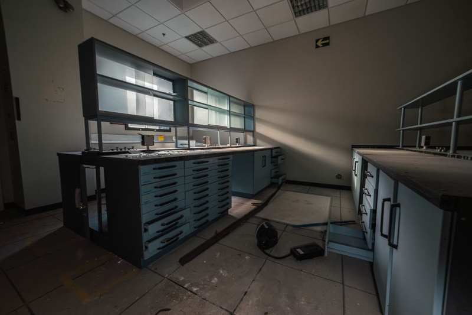

Depois de acessar o arquivo LABORATORIO_OMEGA.EXE, o sistema não abriu um programa comum. Em vez disso, um mapa foi reconstruído na tela. A localização era antiga. Esquecida. Marcada como inexistente em todos os registros oficiais. Mesmo assim, o sinal apontava com precisão absoluta. O trajeto me levou até uma instalação subterrânea. A entrada estava parcialmente selada, como se tivesse sido abandonada às pressas. O ar do lado de dentro era pesado. Não havia luz natural. Apenas a iluminação fraca de sistemas de emergência ainda ativos. Os corredores estavam intactos em alguns pontos… e completamente destruídos em outros. Cabos expostos atravessavam o chão como raízes secas. Portas automáticas se abriam lentamente, mesmo sem energia suficiente para isso. O silêncio aqui não parecia natural. Era o tipo de silêncio que acontece quando algo está esperando.Encontrei placas antigas identificando setores do laboratório:
Alguns deles estavam inacessíveis. Outros ainda respondiam… mesmo sem ninguém do outro lado. No centro da instalação, havia uma sala principal. Todos os terminais estavam desligados. Todos… exceto um. O monitor ligado exibia uma única linha de texto:
Ao me aproximar, a tela piscou. Por um instante, tudo ficou preto. E então novas palavras surgiram:
Não há registros de quem autorizou esse acesso. Não há logs de ativação. Mas algo dentro do sistema… reconheceu minha presença. Agora estou dentro do Laboratório Omega. E tenho a sensação de que não fui eu quem encontrou esse lugar.
Foi ele que me encontrou primeiro.
Prossiga para a quarta página do diário: Quarta Página do Diário